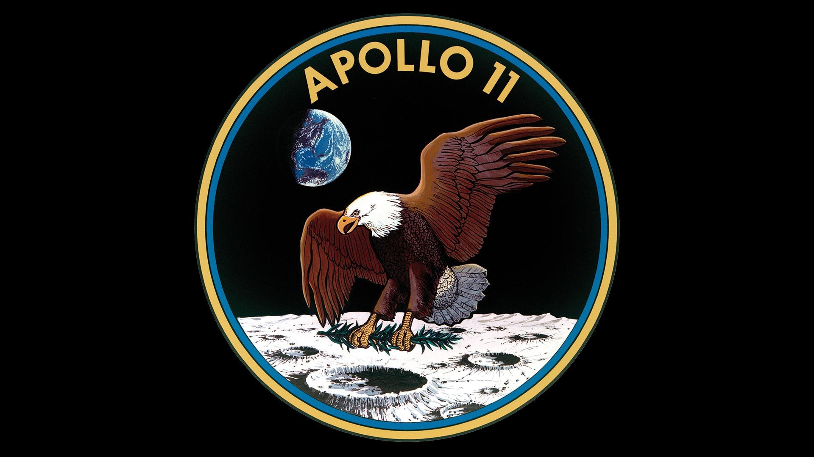
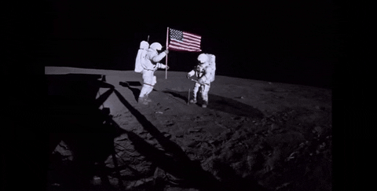
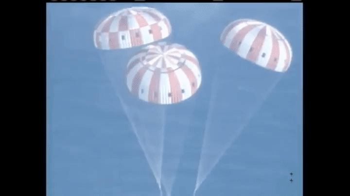
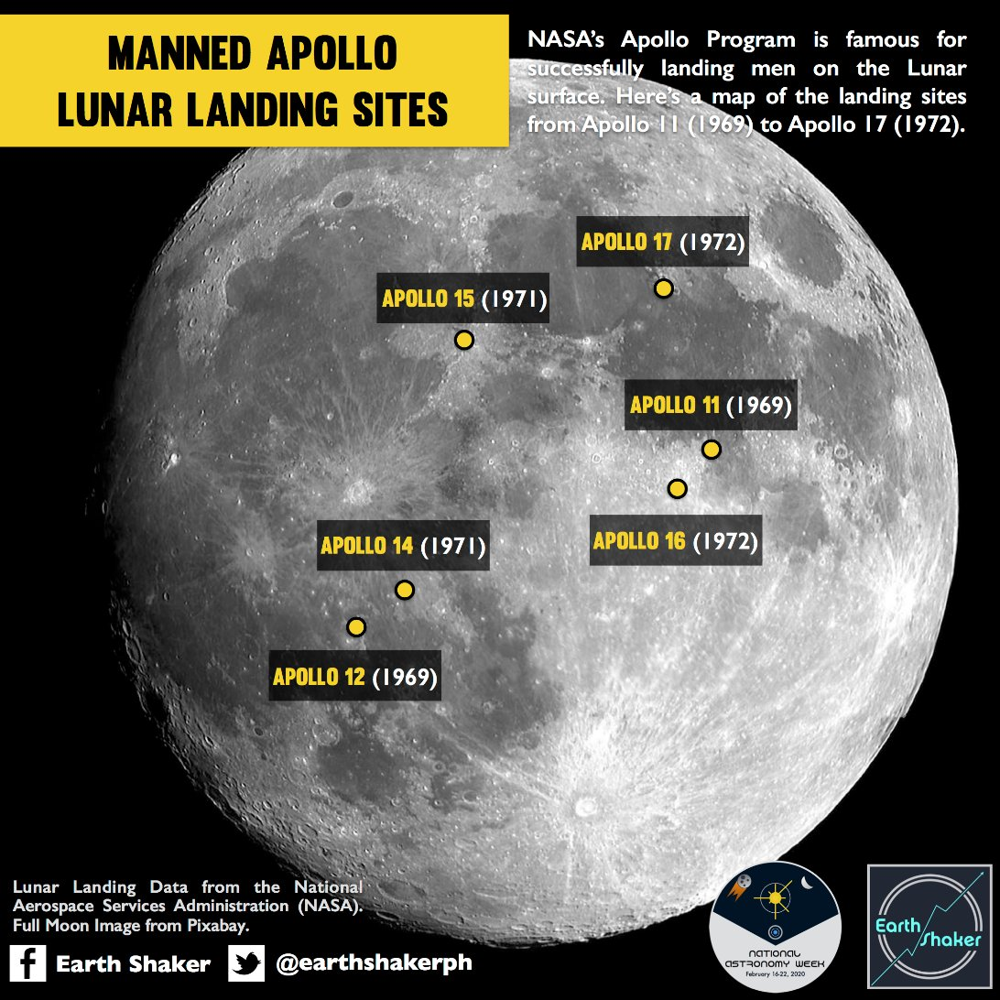

Apollo 11 Mission
Preparation and Launch
The Apollo 11 mission, launched on July 16, 1969, marked a historic milestone in human exploration. The spacecraft was equipped with cutting-edge technology and meticulously planned procedures to ensure the astronauts' safety and mission success. The launch from Kennedy Space Center captivated the world and ignited the dream of reaching the moon.

Lunar Landing
On July 20, 1969, Neil Armstrong and Edwin "Buzz" Aldrin became the first humans to set foot on the lunar surface, while Michael Collins orbited above in the command module. The lunar module, Eagle, separated from the command module, Columbia, and descended to the moon's surface. Armstrong's iconic words, "That's one small step for [a] man, one giant leap for mankind," echoed across the globe.
Return to Earth
After spending approximately 21 hours on the lunar surface, Armstrong and Aldrin rejoined Collins in the command module. The module's engines fired, propelling the crew out of lunar orbit and back toward Earth. The successful reentry and splashdown in the Pacific Ocean on July 24, 1969, marked the triumphant conclusion of the historic Apollo 11 mission, inspiring generations to come.
Apollo Mission spots on the Moon
The captivating image reveals the moon's surface as seen from Earth, adorned with historical significance. Highlighting Apollo mission landing spots, each mark represents humanity's triumphant steps on lunar soil. Apollo 11's iconic "Eagle" rests where Neil Armstrong and Buzz Aldrin first ventured in 1969, a testament to audacious achievement. Nearby, Apollo 17's "Challenger" denotes the last human mission to the moon. This image, both a homage to past explorations and an inspiration for future endeavors, immortalizes our lunar exploration legacy against the vast cosmic canvas, reminding us of the boundless possibilities that await us beyond our home planet.
